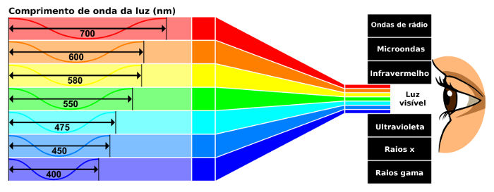
Propriedades da luz
As propriedades da luz são as características físicas que definem como ela se comporta, se move e interage com os objetos.

Propriedades da luz
As propriedades da luz são as características físicas que definem como ela se comporta, se move e interage com os objetos.
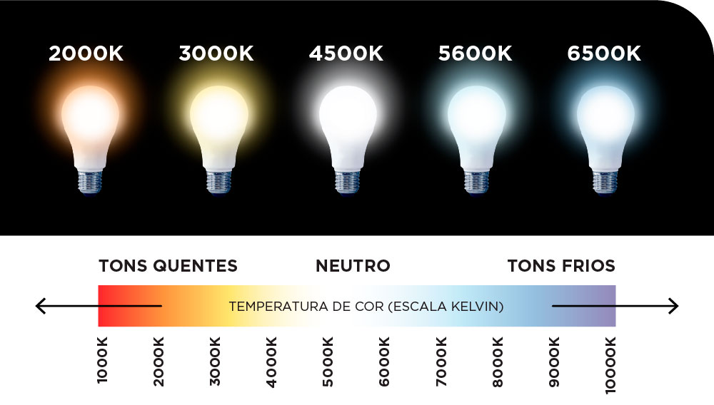
Intensidade da luz
A quantidade de energia luminosa que a luz transporta por unidade de área.
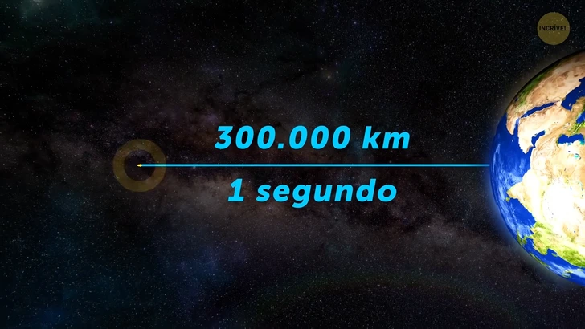
Velocidade da luz
No vácuo, a luz viaja a cerca de 299.792.458 metros por segundo.
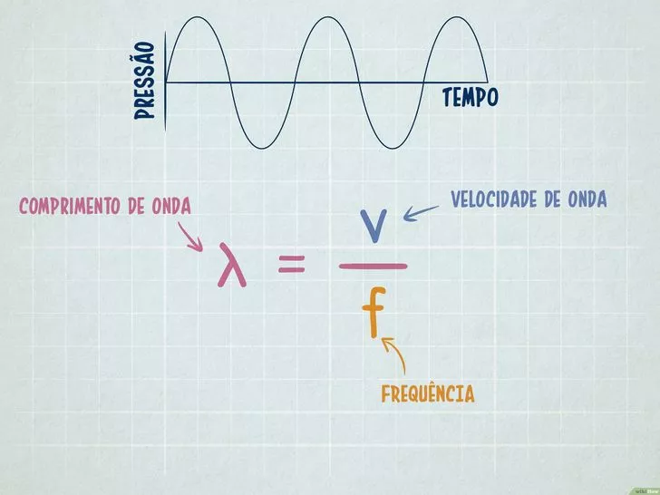
Frequência e Comprimento de Onda
A distância entre duas cristas da onda de luz, que determina as cores que enxergamos no espectro visível.
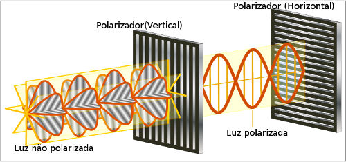
Polarização
É quando a luz passa a vibrar em uma única direção.
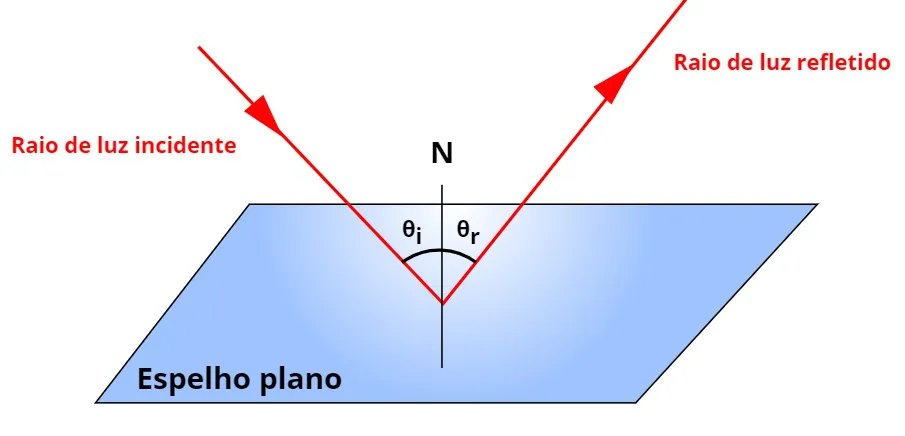
Reflexão e espelhos
A reflexão da luz é um fenômeno óptico em que um raio de luz atinge uma superfície e retorna para o meio de onde veio.
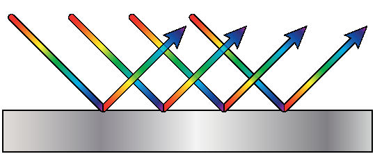
Leis da Reflexão
1ª Lei: O raio incidente, o raio refletido e a normal estão no mesmo plano.
2ª Lei: O ângulo de incidência é igual ao ângulo de reflexão.
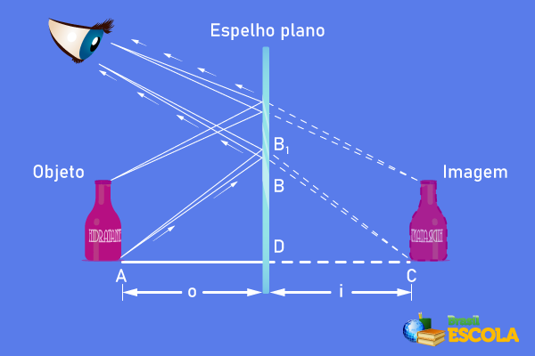
Espelho Plano
É uma superfície lisa e plana que reflete a luz, formando uma imagem virtual, direita e do mesmo tamanho do objeto.
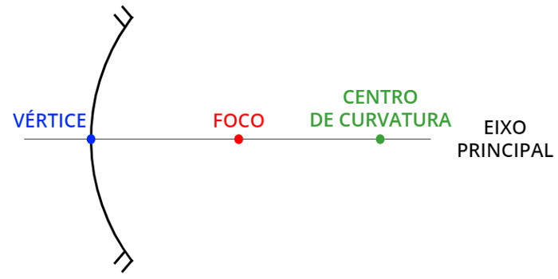
Espelhos Esféricos
São espelhos com superfície curva, podendo ser côncavos ou convexos, que refletem a luz formando imagens de diferentes tamanhos e posições.
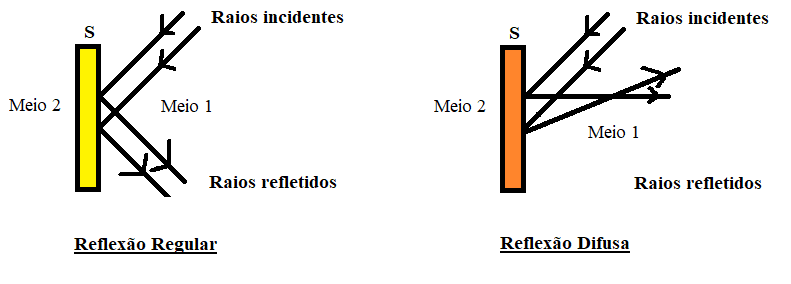
Fenômenos Ópticos
São acontecimentos relacionados ao comportamento da luz, como reflexão, refração, difração e polarização.
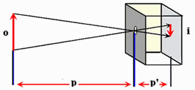
Propagação Retilínea
É o fenômeno em que a luz se propaga em linha reta em meios transparentes e homogêneos.
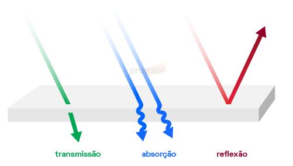
Reflexão
É quando a luz bate em uma superfície e retorna ao meio de origem.
Refração
É quando a luz muda de direção e velocidade ao passar de um meio para outro.
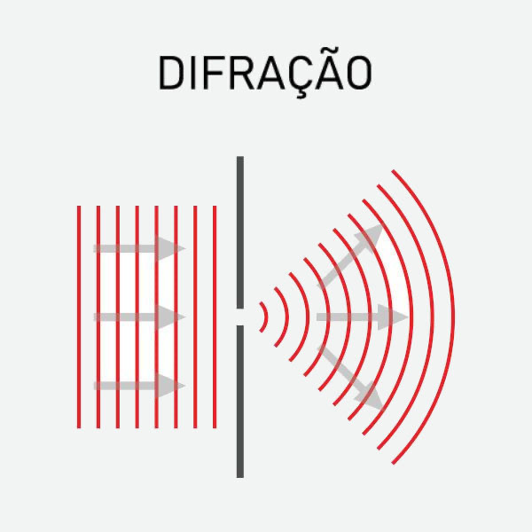
Difração
É quando a luz se espalha ao passar por uma abertura ou contornar um obstáculo.
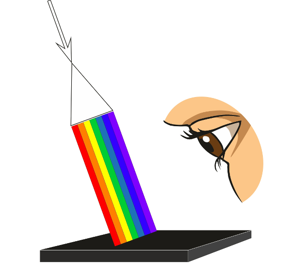
Absorção da luz
É quando um material retém parte da luz que recebe, transformando sua energia, geralmente, em calor.
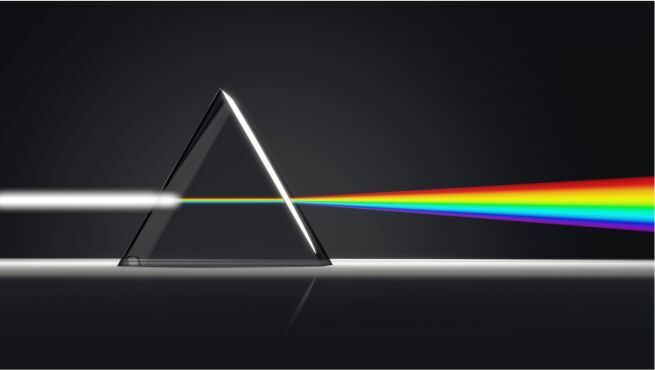
Dispersão da luz
É quando a luz branca se separa em várias cores, como acontece no arco-íris.
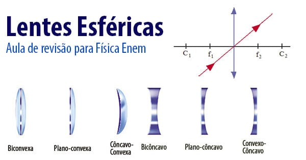
Lentes Esféricas
São objetos transparentes e curvos que refratam a luz, podendo ser convergentes ou divergentes.

Lente Convergente
É uma lente que faz os raios de luz se aproximarem, convergindo para um ponto chamado foco.

Lentes Divergentes
É uma lente que faz os raios de luz se afastarem, como se viessem de um ponto chamado foco.

Óptica do Corpo Humano
A óptica do corpo humano é o estudo de como o olho funciona como um instrumento físico para capturar a luz e formar as imagens que enxergamos.
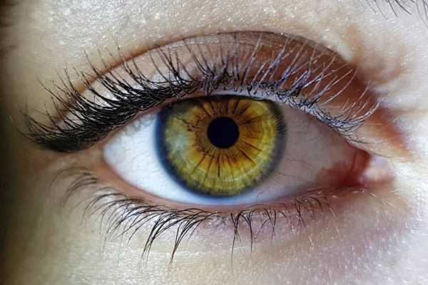
Olho Humano
É o órgão responsável pela visão, captando a luz e formando imagens na retina.
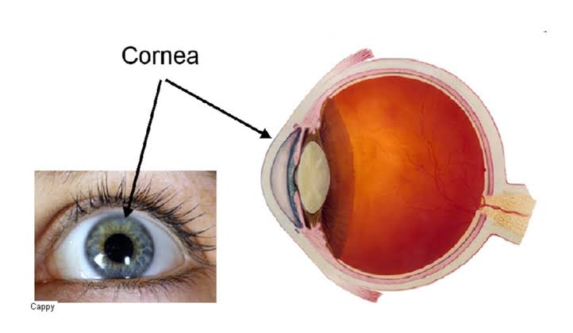
Córnea
É a camada transparente e externa do olho que faz a primeira e maior parte da refração da luz que entra no olho.
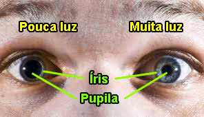
Íris e Pupila
Íris: parte colorida que controla a luz.
Pupila: abertura central que permite a entrada da luz.
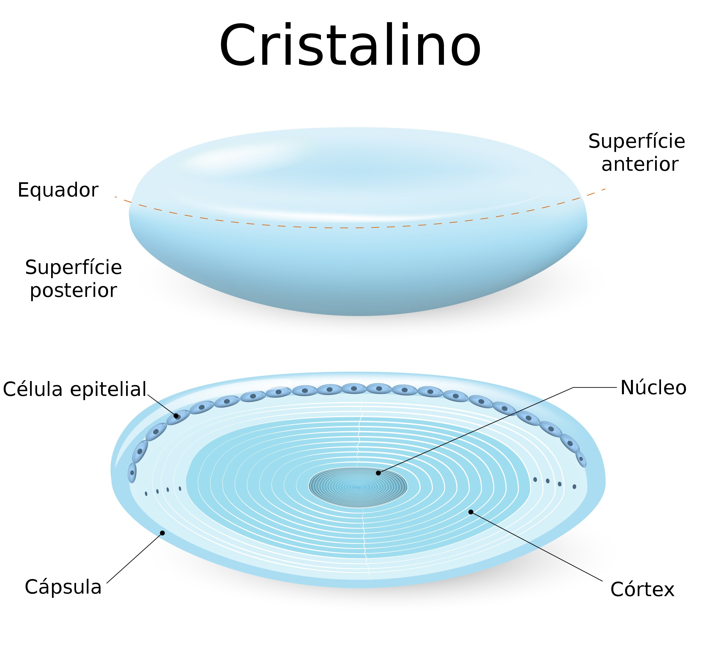
Cristalino
É uma estrutura transparente do olho que ajusta o foco da luz para formar imagens nítidas na retina.
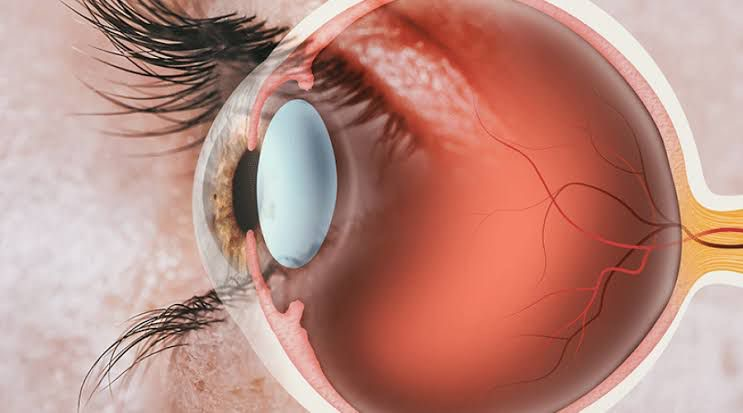
Retina
É a camada interna do olho que recebe a luz e possui cones e bastonetes, responsáveis por transformar a luz em sinais nervosos.

LED e LDR
O sensor de luz capta um pico intenso ao alinhar de frente para o LED, caindo a zero ao se mover pois a luz segue em linha reta.
Ver vídeo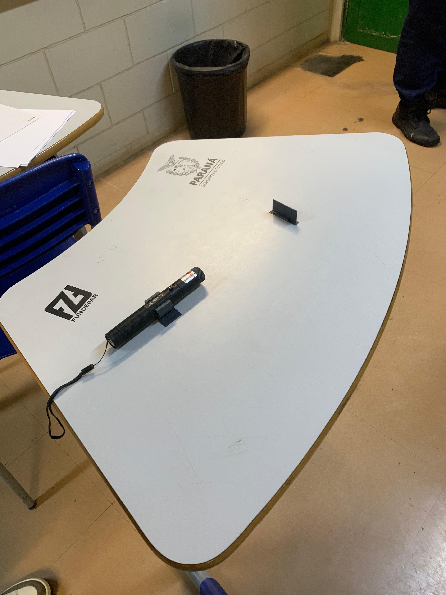
Fenda Única e Dupla
O feixe passa por uma abertura fina e projeta faixas claras e escuras na parede, permitindo calcular o comprimento de onda da luz.
Ver vídeo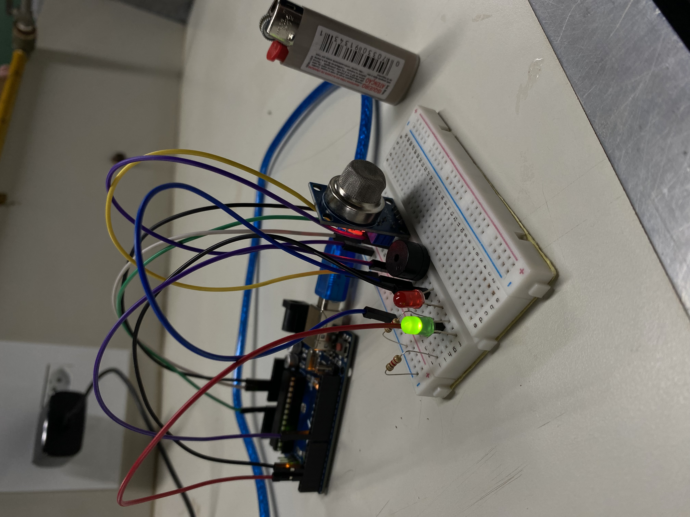
Sensor de Gás e Fumaça
O sensor MQ-2 altera sua resistência ao detectar fumaça ou gás vazado, disparando automaticamente o alarme sonoro e visual.
Ver vídeo